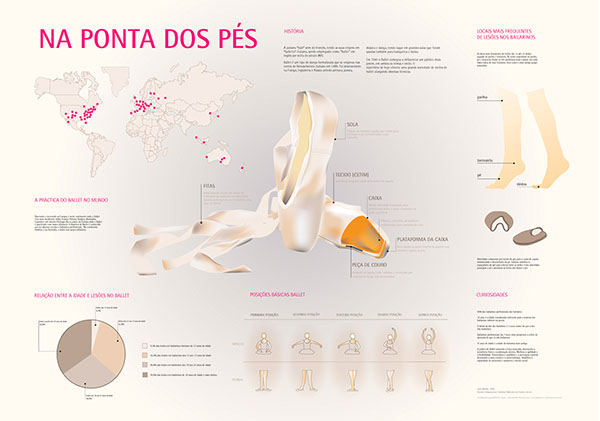

About
Feedback
Portfolio
Contact
Questions

×
×
![A special range was developed with 3 varieties of Alsa Gelatins. The purpose of the project would therefore be to provide the target audience (children) and the Alsa brand with a special range of prepared and ready-to-eat gelatins, not having to use a spoon. Care was taken to wrap the six individual gelatin packs in one pack. Thus, we used the creation of a cylindrical package with figurative vectors of strawberry, pineapple and orange fruits, with a patterned background of colored stripes. Each package contains a representation of a slice of the fruit on top. A simulation of the integrated product was then created on a supermarket shelf.](Images/second.jpg)